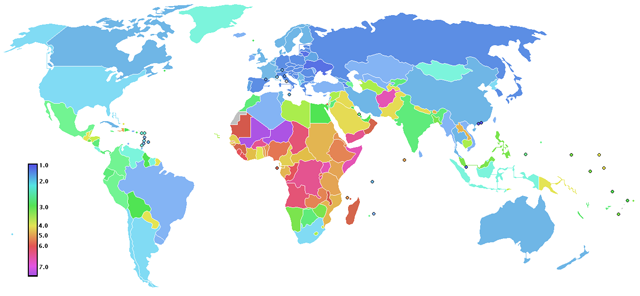

Declining Birth-Rates and Believing that "We Don't Need More People"
by phil on Thursday Nov 1, 2012 12:10 AM

The paradox of declining birth-rates in Europe and the developed world is a puzzling anomaly. The birth-rate actually increases with lower incomes, which is counter-intuitive, since more wealth seems to imply a greater capacity to support a family.
However, the higher birth-rate in lower income and education levels may simply be due to limited access to contraception. Or it could be due to the reproductive urgency of a harsh life; when people close to you die young, it increases the urgency to pair-up and reproduce.
Either way, education and money obviate those things, so then what's left? Perhaps the declining birth-rate could be explained by the simple folk short-hand excuse, "The world doesn't need more people."
Perhaps, when money and a certain station in life bring about the luxury of rational choices and family planning, to take on the costly proposition of child-rearing, the motivation has to come from external forces. Somehow, the couple needs to believe, "We need more people."
"We" could be anything. The default "we" is usually your city, church or culture. If, for example, you are attached to Zoroastrianism (one of the oldest surviving religions, which now only has less than 200,000 members) and you attend the meetings regularly, you might feel the exhortation by elders to be fruitful and multiply as the only way to keep the culture alive. You may then pair up with a fellow Zoroastrian and shoot for five or more children.
In the absence of religion, you might feel like your town needs more people. If you were one of the early pilgrims, for example, reproduction would be an urgent communal necessity to grow the city to a large enough size to survive the ebb and flow of seasons and foreign threats.
But most Americans live in big cities now, and if you are ever stuck in traffic, it's easy to think that your city doesn't need more people. "We do not need more people, in fact, it would be nice if people went away."
This could all be a psychological trick, though, because your mayor wants more growth, and population growth is crucial for GDP growth. However, the individual is not attached to that at all. The individual's experience is that of over-crowding. If living spaces are tight, it might be easy to think, "Well, where would I put a new baby? How would I cram a kid into a already over-crowded school? How will my kid find a job one day?"